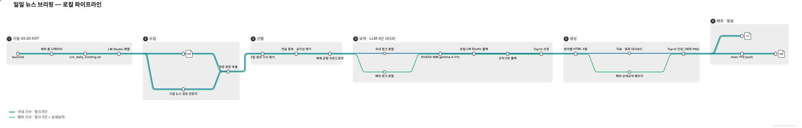

Local Operations · 2026-09-14
로컬 운영 가이드
매일 새벽 03:30, 이 맥이 36개 언론사에서 뉴스를 모아 LLM으로 번역·요약하고 웹과 텔레그램으로 내보낸다. 이 문서는 그 과정이 어디서 어떻게 도는지와, NVIDIA build를 정확히 어떤 방식으로 쓰고 있는지를 정리한 것이다.
Route Map
전체 노선도
파란 노선이 국내 기사, 초록 노선이 해외 기사다. 두 노선은 수집·선별까지 함께 달리다 요약 단계에서 갈라진다 — 국내는 8건씩, 해외는 3건씩 끊어 부르고, 해외만 상세요약 페이지를 따로 만든다.
← 좌우 스크롤

briefing-metro.mmd이며 nf-metro로 다시 그릴 수 있다.이 프로젝트 venv는 Python 3.9라 nf-metro(3.10+ 필요)를 못 쓴다. 별도 인터프리터로 렌더한다.
# 최초 1회: 3.10+ 인터프리터로 별도 디렉터리에 설치 pip install --target ~/pylib nf-metro # 렌더 (한글 라벨 때문에 PYTHONUTF8=1 필요) PYTHONUTF8=1 PYTHONPATH=~/pylib python -m nf_metro render \ local-docs/briefing-metro.mmd -o local-docs/briefing-metro.svg \ --theme light --animate --x-spacing 150 --y-spacing 80
Boot Chain
무엇이 무엇을 실행하는가
실행 사슬은 3단계다. 각 단계가 따로 존재하는 데는 이유가 있다.
← 좌우 스크롤
launchd는 외장 USB 볼륨에 접근하지 못한다. plist의 StandardOutPath를 저장소 안(logs/)에 두면 launchd가 로그 파일조차 만들지 못해 스크립트를 시작하기도 전에 EX_CONFIG(78)로 죽는다.
2026-09-05 04:30 예약 실행이 이렇게 실패했는데, 로그가 0바이트도 안 생겨서 겉으로는 아무 일도 없었던 것처럼 보였다. 동일한 /bin/echo 작업으로 격리 확인했다 — 로그를 홈에 두면 exit 0, 외장 볼륨에 두면 EX_CONFIG.
launchd가 스폰한 bash는 외장 볼륨을 정상적으로 읽고 쓴다. 막히는 건 launchd 본체뿐이라, 래퍼가 시작된 뒤부터는 문제가 없다.
실행 스크립트가 하는 일
- 1. origin/main 최신화 — fast-forward만 허용. 갈라져 있으면 중단하고 사람이 확인한다
- 2. LM Studio 준비 — HTTP로 생존 확인 후 필요시 기동·모델 로드(전부 시한 걸림)
- 3. main.py 실행 — 수집부터 텔레그램 발송까지
- 4. main 커밋·push — 충돌 시
git pull --rebase후 최대 3회 재시도 - 5. gh-pages 배포 —
docs/를 워크트리에 rsync 후 push
TTY가 없는 launchd 환경에서 lms server start는 서버가 이미 떠 있어도 반환하지 않는다(lms ps도 마찬가지). 안전망을 준비하다가 본 파이프라인을 멈춰 세우는 상황이라, 생존 확인은 curl --max-time 5로 하고 남은 lms 호출은 직접 만든 시한 래퍼로 감싼다(macOS에는 GNU timeout이 없다).
NVIDIA Build
NVIDIA build를 어떻게 쓰고 있나
무료 티어 NVIDIA NIM을 OpenAI 호환 엔드포인트로 직접 호출한다. SDK 없이 requests.post 한 번이 전부다.
| 항목 | 값src/utils/llm_client.py |
|---|---|
| 엔드포인트 | https://integrate.api.nvidia.com/v1/chat/completions |
| 모델 | google/gemma-4-31b-it — 31B. 카탈로그에서 폐기되면 갱신 필요 |
| 인증 | Authorization: Bearer <키> · 키는 .env에서만 읽는다 |
| 호출당 타임아웃 | 180초 |
| 온도 | 0.3 |
| thinking | chat_template_kwargs: {enable_thinking: false} — 켜두면 추론 텍스트가 JSON 앞에 붙어 파싱이 깨진다 |
카테고리별 전용 키 8개
무료 티어의 rate limit을 나누기 위해 카테고리마다 다른 API 키를 쓴다. 키가 갈려 있으면 8개 카테고리를 동시에 돌려도 한 계정에 요청이 몰리지 않는다. 없는 카테고리는 공용 NVIDIA_API_KEY로 폴백한다.
키 8개를 병렬로 찔러 보고 결과를 남긴다(순차로 하면 콜드스타트 지연이 앞선 키에 몰린다). 이 호출은 모델 예열도 겸한다.
키를 버리는 건 400·401·403·404처럼 확실한 경우뿐이다. 타임아웃·네트워크 오류는 '확인 불가'로 남기고 그대로 쓴다 — NIM은 모델이 식어 있으면 첫 요청에 수십 초가 걸리는데, 이걸 죽은 키로 판정해 멀쩡한 키 8개 중 7개를 버린 적이 있다. 429도 rate limit이지 키 문제가 아니다.
살아있는 키 개수에 맞춰 전체 동시 호출 수가 정해진다 — 키 수 × 2, 최소 3 최대 16. 카테고리 8개를 CATEGORY_WORKERS로 돌리고 각 카테고리 안에서 청크를 CHUNK_WORKERS(3)로 돌리므로, 키 하나에 몰리는 동시 요청은 3개뿐이다.
왜 기사를 끊어서 부르는가
| 구분 | 청크 크기 | max_tokens | 이유 |
|---|---|---|---|
| 국내 | 8건 | 10,240 | 30건을 한 번에 요청하면 한국어 출력이 상한을 넘겨 JSON 배열이 닫히기 전에 잘린다 |
| 해외 | 3건 | 8,192 | 250자 요약 + 600~800자 상세를 한 호출에서 받아 기사당 출력이 3배 이상이다 |
| Top10 | — | 8,192 | 8개 분야를 통틀어 국내·해외 각 10건 선정 |
기사 8건 배치는 한국어 요약 3,500토큰가량을 생성해 호출 하나가 90초 안팎 걸린다. 예전 기본값 60초로는 정상 생성 중인 요청이 잘려 나가 카테고리가 통째로 규칙기반으로 폴백됐다. 화면에는 그냥 "번역이 안 된 기사"로만 보여서 원인을 찾기 어려웠다.
실패를 다루는 방식
- 429 (rate limit) — 서버가 주는
Retry-After를 우선 따르고, 없으면 5초 → 15초 백오프(최대 30초 대기) - 5xx·네트워크 오류 — 지수 백오프로 최대 2회 재시도
- 4xx — 재시도해도 안 바뀌므로 응답 본문을 로그에 남기고 즉시 포기
- 잘린 JSON — 재요청하면 똑같이 잘리므로, 먼저
_salvage_array()가 완성된 객체만 건져낸다. 30건 중 22건이 멀쩡한데 0건으로 버리는 건 아깝다 - JSON이 아닌 응답 — "설명 없이 JSON만 출력하라"는 재프롬프트 1회, 그래도 실패하면 로컬 LLM에 넘긴다
- 시간 예산 초과 — 남은 호출은 즉시
None을 반환하고 폴백으로 넘어간다
클라우드 LLM 총합 1,800초. 예전에는 900초였는데, GitHub Actions의 30분 하드 제한 안에서 수집·본문(약 4분)과 HTML·텔레그램(약 2분)까지 끝나야 했기 때문이다. 로컬로 옮겨 그 벽이 사라져 올렸다.
Fallback Ladder
LLM 3단 사다리
노선도에서는 한 줄로 지나가지만, 실제로 2단·3단은 앞 단계가 실패했을 때만 들르는 우회로다.
← 좌우 스크롤
실행 로그의 로컬 폴백: 성공 N이 0이 아니면 클라우드가 흔들린 날이다. 지면은 멀쩡해 보이므로 이 줄을 보지 않으면 며칠씩 모르고 지나간다. 실행 시간이 길어지는 것도 같은 신호다.
로컬 모델을 gemma로 고른 이유
M4 Pro / 48GB에서 같은 기사·같은 프롬프트로 실측했다.
enable_thinking: false를 무시한다. 해외 청크에서 max_tokens 8,192를 추론 24,883자로 전부 태우고 본문은 0자로 끝났다하루 70여 호출을 전부 로컬로 돌리면 약 5시간이다. 병렬화로도 해결되지 않는다 — 통합 메모리 대역폭이 병목이라 단일 48.8 tok/s에서 4병렬 집계 57.5 tok/s로 18%밖에 늘지 않는다. 그래서 LOCAL_LLM_CONCURRENCY는 2로 좁게 둔다.
Timing
왜 03:30에 시작하나
소요 시간이 그날 클라우드 사정에 크게 좌우된다. 실측 두 날이 극과 극이었다.
| 날짜 | 클라우드 | 로컬 폴백 | 소요 | 완료 |
|---|---|---|---|---|
| 09-06(일) | 72/72 성공 | 0청크 | 9분 42초 | 04:39 |
| 09-07(월) | 48/72 · ReadTimeout | 23청크 | 1시간 41분 | 06:11 (지각) |
예산 상한까지 가면 클라우드 30분 + 로컬 90분 + 수집·발송 10분 ≈ 130분이다. 04:30 시작으로는 나쁜 날 06:40이 되므로, 03:30이면 상한에 걸려도 05:40에 끝나 6시 안에 들어온다.
클라우드가 24청크를 놓쳤는데도 규칙기반 대체는 0/247건이었다. 늦었을 뿐 품질은 지켜졌다 — 폴백 사다리가 값을 한 날이다.
Operations
운영 명령어
지금 한 번 돌리기
cd /Volumes/D/AI_Projects/Claude/01_Projects/20260203_news_brefing_system bash scripts/run_daily_briefing.sh # 또는 예약 작업을 그대로 한 번 깨우기(래퍼 경유까지 검증됨) launchctl kickstart -p gui/$(id -u)/com.allenst486de.newsbriefing.daily
그날 상태 판독
grep -E "LLM status|로컬 폴백" $(ls -t logs/run_*.log | head -1) # 예약 실행이 아예 안 돌았을 때는 이 둘을 먼저 본다 launchctl print gui/$(id -u)/com.allenst486de.newsbriefing.daily | grep -E "runs|last exit" tail -20 ~/Library/Logs/news-briefing/launchd.out.log
스케줄 변경
# plist의 Hour/Minute 수정 후 반드시 재등록 (파일만 고치면 안 바뀐다) launchctl bootout gui/$(id -u)/com.allenst486de.newsbriefing.daily launchctl bootstrap gui/$(id -u) ~/Library/LaunchAgents/com.allenst486de.newsbriefing.daily.plist launchctl print gui/$(id -u)/com.allenst486de.newsbriefing.daily | grep -A4 descriptor
소스 추가 전 검증
# 등재된 모든 피드 생존 확인 python test_feeds.py # 생존만으로는 부족하다 — 발행일 중앙값과 제목 표본까지 볼 것 # (죽지 않았지만 갱신을 멈춘 피드, 분야와 내용이 다른 피드가 실제로 있었다)
Failure Modes
겪은 장애와 증상
같은 증상을 다시 만났을 때 빨리 짚기 위한 기록이다.
| 증상 | 진짜 원인 | 대응 |
|---|---|---|
| 아무 일도 안 일어남로그 0바이트 | launchd가 외장 볼륨에 로그를 못 만듦 · exit 78 | launchd 관련 경로를 전부 내장 디스크로 |
| 시작은 했는데 진행 없음 | lms CLI가 TTY 없는 환경에서 무한 대기 | HTTP 확인 + 시한 래퍼 |
| 시각을 고쳤는데 옛 시각에 실행 | plist만 수정하고 재등록 안 함 | bootout + bootstrap |
| 인포그래픽이 1장만 옴 | 헤드라인에 개행 → Pillow textlength() 예외 | 측정 전 공백 정규화 |
| 지면에 영문 원문이 남음 | 클라우드 실패 후 규칙기반으로 직행 | 로컬 LLM 2단 추가 |
| 브리핑이 6시 넘어 도착 | 클라우드 지연 → 느린 로컬 폴백이 다수 | 시작 시각 03:30으로 |
규칙기반 대체 0/N건 + 로컬 폴백: 성공 0 — 이 두 줄이면 클라우드가 온전히 일한 날이다.